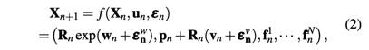
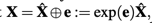
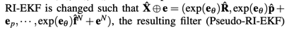

- 如果是无 bias 的理想 IMU ，propagate 环节可以使用 IEKF ，且
- 如果是 RIEKF， 状态误差演化不依赖输入的ω,a；
- LIEKF 依赖输入的ω,a。
- 如果是有 bias 的 IMU（把 bias 加入状态量），propagate 环节的状态误差演化将依赖状态估计值 X^
- 如果是 RIEKF，状态误差演化依赖 R^,p^,v^，不依赖 IMU 的去 bias 测量值 ωm−b^ω,am−b^a;
- 如果是 LIEKF，正好相反；
- 6DoF landmark 可以构造出左不变观测（右不变还不确定是否可以，暂时没构造成功）： 只有协方差矩阵依赖状态轨迹，观测误差的 Jacobian 恒定。且可以支持相机外参，可以适配多camera、滑窗。
- 但 feature 点观测（3D 位置信息），以及更贴近实际的 bearing vector 观测，目前都没有构造出不变观测误差。
- 综合上两点，LIEKF 可能更好用一点：存在 6DoF landmark 不变观测，且能适配外参和滑窗，且状态误差演化不依赖 R^,p^,v^（转而依赖相对更确定的 ωm−b^ω,am−b^a）；
- 目前能想到的 IEKF 应用最理想的情况： 状态转移靠（不怎么打滑的）轮速 odometry 或无 bias 的 IMU，配以 6DoF landmark 。
理想情况下（bias=0），可以构造符合 IEKF 要求的过程；
状态定义为 (R,p,v)，状态空间为 RPV=SO(3)⋊PV, 其中PV=R3×R3为 (p,v) 所在的空间，配备平凡李群结构；
群乘法定义为:
(R1,p1,v1)⋅(R2,p2,v2)=(R1R2,p1+R1p2,v1+R1v2)
控制量(ω,a)代表载体系下的角速度和加速度
过程演化的微分方程：
X˙=f(ω,a)(X)=f(ω,a)(R,p,v)=(R˙,p˙,v˙)=(Rω∧,v,Ra−G)
f(ω,a)(Id)=f(ω,a)(I,0,0)=(ω∧,0,a−G)
这个过程方程并非左不变的：Xf(ω,a)(Id)=(Rω∧,0,R(a−G))=f(ω,a)(X)
也非右不变的： f(ω,a)(Id)X=(ω∧R,ω∧p,a−G+ω∧v)=f(ω,a)(X)
但：
X12=X1X2=(R1R2,p1+R1p2,v1+R1v2)
X1f(ω,a)(X2)=(R1R2ω∧,R1v2,R1R2a−R1G)
f(ω,a)(X1)X2=(R1ω∧R2,v1+R1ω∧p2,R1a−G+R1ω∧v2)
X1f(ω,a)(Id)X2=(R1ω∧,0,R1(a−G))⋅X2=(R1ω∧R2,R1ω∧p2,R1(a−G)+R1ω∧v2)
f(ω,a)(X1X2)=(R1R2ω∧,v1+R1v2,R1R2a−G)
满足 f(ω,a)(X1X2)=f(ω,a)(X1)X2+X1f(ω,a)(X2)−X1f(ω,a)(Id)X2
以右不变状态误差为例：η=XX^−1=(R,p,v)(R^−1,−R^−1p^,−R^−1v^)=(ηR,p−ηRp^,v−ηRv^)
使用右不变状态误差 相当于 使用左微扰的 robocentric ? 是否有区别？需要时间思考确认一下，状态转移这块可能是没区别的？
ηR=RR^−1
ηp=p−ηRp^
ηv=v−ηRv^
η˙R=RR^−1˙=R˙R^−1−R(R^−1R^˙R^−1)=Rω∧R^−1−RR^−1R^ω∧R^−1=0
η˙p=p˙−(0η˙Rp^+ηRp^˙)=v−ηRv^=ηv
η˙v=v˙−(η˙Rv^+ηRv^˙)=(Ra−G)−ηR(R^a−G)=Ra−Ra+(ηR−I)G=(ηR−I)G
右不变状态误差的演化很简洁：η˙=(0,ηv,(ηR−I)G)。
对应的李代数演化方程为：
exp(ξR)=ηR
Jl(ξR)ξp=ηp
Jl(ξR)ξv=ηv
η˙η−1=(0,ηv,(ηR−I)G)(ηR−1,p^−ηR−1p,v^−ηR−1v)=(0,ηv,(ηR−I)G)=(0,Jl(ξR)ξv,(exp(ξR)−I)G)
ξ˙=Jl−1(ξ).(η˙η−1)=Jl−1(ξ).(0,Jl(ξR)ξv,(exp(ξR)−I)G)
线性化并略去 ξ 的高阶小量，得
ξ˙≈(0,ξv,ξRG)
既不依赖 X^，也不依赖输入的控制量 ω,a，只依赖一个重力常量 G。
没有bias和惯性测量误差时，使用普通的线性状态误差也会得到不依赖 X^的误差演化方程：
R~˙=R~ω∧,p~˙=v~,v~˙=R~a
而且该误差演化还不依赖重力常量 G，只不过会依赖输入的控制量 ω,a。
不管用什么误差，相同边界值情况下状态量本身的积分是一样的，变化的只是误差的定义（参数化方式）和概率分布。误差演化方程的线性化程度越好（线性化程度怎么评估）、越能保持误差的高斯性，就越利于系统的收敛。
观测函数h在真值附近的观测输出波动与状态误差间的线性程度也是重要因素。
(状态误差自身演化的线性程度+与观测波动的线性程度)
如果依赖状态轨迹，但实际应用场景的状态轨迹常见模式已知，则可以具体分析？
依然以 右不变误差为例，看看加入 bias 会怎样：如果引入 bias，X^将被依赖。使用右不变误差时，误差的演化主要受 R^ * (bias 误差) 影响。
如果引入 bias bω,ba和它们的估计值 b^ω,b^a，以及对应的测量噪声 νω,νa，那么
状态空间扩充为 (SO(3)⋊PV)×B；其中 B=R3×R3，配备平凡李群结构。
a=am−ba−νa,a^=am−b^a
ω=ωm−bω−νω,ω^=ωm−b^ω
R˙=ω∧,R^˙=ω^∧
v˙=Ra,v^˙=R^a^
η˙R=Rω∧R^−1−RR^−1R^ω^∧R^−1=R(ω−ω^)∧R^−1=ηRR^(−ηbω−νω)∧R^−1=−ηR(R^(ηbω+νω))∧
进一步
η˙R=−ηR(R^(ηbω+νω))∧ηR−1ηR=−(RηRR^(ηbω+νω))∧ηR
注意 η˙R 不是个旋转向量（∈so(3)），他不是 ω,ω^ 的旋转差！这种常规定义不变误差的方式，似乎也变得不完美了？如何定义 ηR 可以使其物理意义合理且 η˙R 能定义为角速度向量之差 Rω−R^ω^= ？
η˙p=p˙−(η˙Rp^+ηRp^˙)=v−ηRv^−η˙Rp^=ηv−η˙Rp^
η˙v=v˙−(η˙Rv^+ηRv^˙)=(Ra−G)−ηR(R^a^−G)−η˙Rv^=(ηR−I)G−RηRR^(ηba+νa)−η˙Rv^
转化为李代数，线性化并略去 ξ 的高阶小量，得
(ηbω=ξbω, ηba=ξba, ηR=exp(ξR)≈I+ξR, ηp=Jl(ξR)(ξp)≈ξp,ηv≈ξv, )
ξ˙R≈η˙R≈−(R^(ξbω+νω))∧
ξ˙p≈η˙p≈ξv−ξ˙Rp^
ξ˙v≈η˙v≈ξRG−R^(ξba+νa)−ξ˙Rv^
再整理：
ξ˙R∨≈−R^(ξbω+νω)
ξ˙p≈ξv+(R^(ξbω+νω))×p^
ξ˙v≈ξRG−R^(ξba+νa)+(R^(ξbω+νω))×v^
（bω,ba 的演化是简单的随机游走，不再写出）
可见，由于 ω 的 bias 和测量噪声 bω+νω，旋转部分的 jacobian 对 R^ 产生了依赖 R^(ξbω+νω)；
平移和速度部分的误差，因为旋转误差 jacobian ξ˙R 的存在，又各自对 p^ 和 v^ 产生了依赖；
由于 a 的 bias 和测量噪声 ξba+νa，速度的 jacobian 又对 R^ 产生了额外依赖 R^(ξba+νa)；
如果 bias 估计得比较准，且 IMU 测量噪声较小，那么 jacobian 受 R^,p^,v^ 的影响就会较小。
如果陀螺仪的 bias 估得准（静止初始化），那 R^(ξbω+νω)就可以控制住，这时可以认为 ξ˙R∨,ξ˙p 受估计值X^的影响较小；
对于 ξ˙v，它额外受加速计的 bias 影响，而要估准 加速计的 bias 可能需要有足够的 IMU 激励；随着时间积累 ξ˙v的积分 ξ 又会影响到 ξ˙p.
左不变状态误差定义为
η=X^−1X=(R^−1,−R^−1p^,−R^−1v,−b^).(R,p,v,b)=(R^−1R,R^−1(p−p^),R^−1(v−v^),b−b^)
ηR=R^−1R
ηp=R^−1(p−p^)
ηv=R^−1(v−v^)
ηb=b−b^=ξb
a=am−ba−νa,a^=am−b^a,a−a^=−(ηba+νa)=−(ξba+νa)
ω=ωm−bω−νω,ω^=ωm−b^ω,ω−ω^=−(ηbω+νω)=−(ξbω+νω)
R˙=ω∧,R^˙=ω^∧
v˙=Ra,v^˙=R^a^
R^−1˙=−R^−1R^˙R^−1=−R^−1R^ω^∧R^−1=−ω^∧R^−1
η˙R=R^−1˙R+R^−1R˙=−ω^∧R^−1R+R^−1Rω∧=−ω^∧ηR+ηR(ω^−(ηbω+νω))∧
η˙p=R^−1(p˙−p^˙)+R^−1˙(p−p^)=R^−1(v−v^)−ω^∧R^−1(p−p^)=ηv−ω^∧ηp
η˙v=R^−1(v˙−v^˙)+R^−1˙(v−v^)=R^−1(Ra−R^a^)−ω^∧R^−1(v−v^)=ηR(a^−(ηba+νa))−a^−ω^∧ηv
最终
η˙R=[ηR,ω^]−ηR(ηbω+νω)∧
η˙p=ηv−ω^∧ηp
η˙v=(ηR−I)a^−ηR(ηba+νa)−ω^∧ηv
可见左不变的误差演化主要依赖 ω^ 和 a^ 这两个去掉 bias 的测量值；
由于 bias 使用了估计值 b^，所以左不变的误差演化相当于只依赖了 X^ 中 b^；
与右不变的情况正好相反，右不变情况下不依赖 b^ ，但依赖 R^,p^,v^;
对应的李代数误差演化为：
ηR=exp(ξR)≈I+ξR, 所以
ξ˙R∨≈ξR∨×ω^−(ξbω+νω)
ξ˙p≈η˙p≈ξv−ω^×ξp
ξ˙v≈η˙v≈ξR∨×a^−(ξba+νa)−ω^×ξv
一种关于 6DoF landmark 的（左）不变观测
设状态量为 X=((RI,pI,f),(Rf,TCI))
状态空间建模为 G=(SO(3)⋊(R3×R3))×(SO(3)×SE(3)))
定义两个群同态：
ϕ:X↦(Rf−1,0)⋅(RI,(pI−f))G→SE(3)
ψ:X↦TCIG→SE(3)
设观测空间为 SE(3)，观测函数为
Y=h(X)=ψ(X)ϕ(X−1)=TCI.(RI−1,−RI−1(pI−f)).(Rf,0)=TCI.(RI−1,−RI−1pI).(Rf,f)
即 Y=TCI.TGI−1.TGF=TCF
Y 正好代表观测到的 tag 相对于相机的 6DoF pose，这是一个有现实观测意义的量。
更有现实意义的当然是 点 feature 的 bearing vector.
状态 X∈G 对观测 Y∈SE(3) 的作用 ρ 定义为：
ρ(X,Y)=ψ(X)Yϕ(X−1)
观测函数h在 ρ 作用下是左不变的：
ρ(X1,h(X2))=ψ(X1)h(X2)ϕ(X1−1)=ψ(X1)ψ(X2)ϕ(X2−1)ϕ(X1−1)=ψ(X1X2)ϕ(X2−1X1−1)=h(X1X2)
由于可以把外参 TCI包含在状态量里，所以适合多 camera 系统或者滑窗。
思考：能否定义出使 h(X)=ψ(X)ϕ(X−1) 等变的右作用 ρ?
SE3上的不变观测误差定义为：
Y~=ρ(X^−1,Y)=ψ(X^−1)Yϕ(X^)=ψ(X^−1)ψ(X)ϕ(X−1)ϕ(X^)=ψ(η)ϕ(η−1)
Y~=ρ(X^−1,Y)=ηTCI.(ηRI−1,ηRI−1(ηpI−ηf)).(ηRf,0)
Y~=ρ(X^−1,Y)=(ηRCI,ηtCI).(ηRI−1,ηRI−1(ηpI−ηf)).(ηRf,0)=(ηRCIηRI−1ηRf,ηtCI+ηRCIηRI−1(ηpI−ηf))
可见上述误差是不依赖状态估计值 X^的。
把 η 转化为 李代数上的状态误差 ξ 并线性化近似后，可以得到 观测误差的 jacobian H=∂ξ∂Y~，H也不依赖 X^.
如果只有 landmark 点位置观测，没有姿态观测，怎么办？
ρ(X^−1,Y) 是否等价于 T^CF−1.TCF=(R^CF−1RCF,R^CF−1(tCF−t^CF)) ? 如果等价就好了，我们就可以把点的位置观测转化为位置的不变误差。但好像二者不等价，无法迁移到点观测的case.
设 ρ(X^−1,Y)=(exp(θ),B) ，将 θ 和 B 作为最终的误差形态 Y~。但 θ 并不代表 R^CF−1RCF， B 也不代表 R^CF−1(tCF−t^CF)。
如果实际的 landmark 观测不是 6DoF 的 Y，而只是它的函数 z=ζ(Y)，比如只有 3D 点坐标、或者更实用的 bearing vector。该怎么处理？
一个直接的思路是，先把实际的观测，转化为上述具有不变性的 6DoF 观测 Y：转化过程中，缺失的观测维度用预测值 X^ 补上，这样"观测噪声"将与状态误差 ξ 产生相关性，再利用 0 空间投影去掉这种相关性以及多出的观测维度。为了方便用 QR 分解来做0空间投影，根据情况可能还需要把 6DoF 观测Y进行重参数化，把缺失观测的自由度排在前面。这样是否就把普通观测得 Jacobian 也转化为不依赖 X^ 的观测了呢？
实际好像是不行的，因为重新参数化后新旧参数间的 jacobian 评估、或者0空间投影的过程，本身就会依赖 X^。
假如实际观测为 z=ζ(Y)，则最终的观测 Jacobian 则计算为 Hz=∂Y∂z⋅∂Y~∂Y⋅H=∂Y∂z⋅(∂Y∂Y~)−1⋅H。
其中 ∂Y∂Y~=∂Y∂(ψ(X^−1)Yϕ(X^))， 且 ∂Y∂Y~ 和 ∂Y∂z 的评估点都为 YzX^(通过实际的低维度观测 z 和状态估计值 X^ 补全缺失维度得到的 Y)，因此这两个矩阵的评估都是依赖 X^ 的；
所以，6DoF landmark 这一不变观测的特例难以推广。
以下两种case，哪种更有利？
- 状态误差演化是线性的，但是依赖状态轨迹（理论上存在吗？）; jacobian 只能靠估计
- 状态误差演化是非线性的，但不依赖状态轨迹；jacobian 已知，但有非线性。
从短时间积分角度（给定相同的初值，初始误差相等），应该是2更有利，因为可以保证初始时的 jacobian 都是相对准确的，所以初始时对积分曲线的偏离量级在误差的二阶小量；而1中，如果不能保证初始 jacobian 正确，那么初始时对积分曲线就再会有额外的偏离，尤其在初始估计较差、 jacobian 误差较大时；
更常见的情况当然是又非线性、又依赖轨迹。
对于观测误差方程而言，不需要做积分，所以误差的线性程度可能更重要些？（线性化 jacobian 的信赖域要大？）即便 jacobian 依赖 X^ ，但是只要差不多就 ok？如果非线性厉害，就算是准确的 jacobian，其信赖域也受限？
一些不成熟的思考：
不依赖控制量的 不变误差，除了方便计算误差的积分外（比如计算离散时间的状态转移矩阵），理论上还有什么优势？
如果 a˙=Ab，b 是随机过程，A是固定的矩阵（对应不变误差下的演化 jacobian）；如果 b 在任意时刻的期望是0（但协方差可能随时间变化），那么 a˙ 在任意时间段内的积分的期望也是0？如果b=a，即 b 就是 a 的积分呢？（积分的期望能否转化成期望的积分？这需要随机微积分的知识来确认）
如果 A 是变化、但不依赖ab的连续信号呢？（对应线性观测误差下的演化 jacobian）
- 是否能构造 bias 的不变性？（难）
- 点 feature 的位置、bearing vector ，能否构造出不变观测？
- 群在自身的作用不必是自己的左乘或右乘？变换群只要与状态空间同维数即可？或者状态群和它作为变换群时可以有不同的群乘法？γ(x) 可以不等于 x−1 ?
- 既然有 bias 后，惯性系统的误差演化已经对X^ 有了9个维度的依赖，那能否尝试下以 SE3 为变换群（是否就等价于 robocentric）？这样还方便处理 3D 点 feature 的观测。
- 运动状态描述群： 当前位置、姿态、速度（惯性系）、载体内加速度（加速系）、载体内角速度（转动系）；
状态群：
R,p,v,a,w
R1R2,p1+R1p2,v1+R1v2,R2−1a1+a2,R2−1ω1+ω2
- SE(3) 做变换群构造 symmetry preserving SLAM，可能对 point feature 也有不错效果 (是否完全等同于 robocentric)?
- 对于 propagate 环节，引入 bias 后，误差的演化要依赖9个维度的X^; SE(3) 也将依赖9个自由度，没有变差？
- feature 观测环节等同于 robocentric ?
状态转移方程：

exp

retraction:

X^⊕e=(exp(eθ)R^,exp(eθ)p^+Jl(eθ)ep,...,exp(eθ)f^N+Jl(eθ)eN)
SO(3)-SLAM: 状态空间被建模为 SO(3)×R3+3N; 利用 SO(3) 的乘法，无法将状态转移方程写成 Xn+1=Xn.Γ(u,ϵ) 的形式；Fn 将是依赖 X^ 的；
SE(3)-SLAM: 对于任意的 Γu,ϵ，利用 SE(3)×R3N 的乘法，与利用 G 的乘法，得到相同的状态转移方程 Xn+1=Xn.Γ(u,ϵ) 。因此SE(3)-SLAM 与 RIEKF-SLAM 有相同的 Fn,Gn；但是作者的实验中 SE(3)-SLAM 总是发散，为什么？是因为 Hn 不同？SE(3)-SLAM 的观测误差非线性更高？
Pseudo-RIEKF: retraction 定义如下：

Pseudo-RIEKF 没有给状态空间以合适的李群结构（群乘法，以及由乘法衍生的 exp）：如果状态空间有李群结构，那么 X^⊕e=exp(e).X^；而由指数映射的特点，exp(2e)=exp(e).exp(e)，所以应该有 (X^⊕e)⊕e=X^⊕2e，但按照上图中定义的 retraction 这显然并不成立。
但对于无穷小的 e ，由于 Jl(eθ)=I ，所以 Pseudo-RIEKF 与 RIEKF 的 retraction 有相同的 Jacobian ∂e∂(X⊕e)∣e=0；
虽然有相同的 jacobian, 但Pseudo-RIEKF的更新环节无法定义为 左乘一个微扰（没有群结构）：当更新的 eθ 较大时，Pseudo-RIEKF 与 RIEKF的 更新结果会差得较多
（本节已重写。但有些推导还可留着以后参考）
原始观测量为相机下的 feature 坐标: y=R−1(f−p)
如果上式的 R,p 代表 IMU 的位姿，那么 R−1(f−p) 是 feature 在IMU系下的坐标；如果有 IMU系 到 Camera 系的外参 T，那么 y=T.R−1(f−p)
为了构造不变性，将观测量扩充为 SE(3) 中的元素
扩充后的观测函数为
h(R,p,f)=(R−1,R−1(f−p))
对应的现实观测模型：比如，观测的 feature 实际上是一个 tag，观测它可以得到它相对 相机（并用外参转化为相对 IMU） 的 6DoF pose。若已知它在全局系下的姿态为 identity，但位置未知（待估计），表示为 f，那么得到的观测值就是 (R−1,R−1(f−p)).
或者可以理解为：
(R,p,f)↦M=(R,p−f)↦M−1=(R−1,R−1(f−p))(SE3)
第一个箭头是群同态ϕ:(R,p,f)↦(R,p−f)；第二个箭头是取逆；
或先取逆，再同态，二者是等价的：h(X)=dY.ϕ(X)−1=dY.ϕ(X−1)
dY=T 是 IMU系 到 Camera 系的外参
h(X1X2)=dY.ϕ(X2−1X1−1)
如果定义作用 ρ 为：ρ(X,Y):=Y.X−1:=Y.ϕ(X−1)，那么 h 在此作用下是左不变的：
h(X)=dY.X−1
左不变状态误差为：
ηR=R^−1R
η=(R^−1,−R^−1p^,−R^−1f^)(R,p,f)=(ηR,R^−1(p−p^),R^−1(f−f^))
exp(ξR)=ηR
Jl(ξR)ξp=ηp=R^−1(p−p^)
Jl(ξR)ξf=ηf=R^−1(f−f^)
ϕ(η)=(ηR,R^−1((p−f)−(p^−f^)))
ϕ(η−1)=(ηR−1,R−1((f−p)−(f^−p^)))
左不变观测误差为 :
ρ(X^−1,Y)=Y.ϕ(X^)=dY.ϕ(X−1)ϕ(X^)=dY.ϕ(η−1)
Y~=ρ(X^−1,Y^)−1.ρ(X^−1,Y)=dY−1.(dY.ϕ(η−1))=ϕ(η−1)=(ηR−1,R−1(f−p)−R−1(f^−p^))
记平移部分的误差为 y~=R−1(f−p)−R−1(f^−p^);
把上述误差转移到 SE3 的李代数上，以便线性化。
对于旋转部分的李代数，令 exp(θ)=ηR−1，得 θ=−ξR；
平移部分的李代数 μ 为
y~=Jl(θ)μ=Jl(−ξR)μ=R−1(f−p)−R−1(f^−p^)=ηR−1(ηf−ηp)=exp(−ξR)Jl(ξR)(ξf−ξp)
μ=Jl(−ξR)−1y~=Jl(−ξR)−1exp(−ξR)Jl(ξR)(ξf−ξp)
把上式线性化并略去状态误差 ξ 的二阶小量可得 μ≈ξf−ξp，因此不变观测误差 μ 相对于 ξ 的 jacobian H 显而易见了。
但注意，实际观测可以得到的值只有 R−1(f−p)，而 R−1 只是为了不变性而构造出的虚拟观测，实际是拿不到的。因此 Y~ 和 y~=R−1(f−p)−R−1(f^−p^) 、θ 都是不可知的，μ 也就是不可获得的。
我们可以强行令 R−1 的观测值为 R^−1来计算上述观测误差，这样 R−1 的观测噪声与状态误差就有了3个自由度的相关性，需要对协方差矩阵再做些处理。如果实际的观测过程不是直接得到 feature 的坐标 y ，而只是 feature 坐标的函数 z=ζ(y)，比如 bearing vector，那将是更复杂的情况。
通用思路是，把实际的观测，转化为对 (R−1,R−1(f−p)) 的观测，这样如前述推导，观测 jacobian H 不依赖 X^；转化过程中，缺失的观测维度用预测值 X^ 补上，这样"观测噪声"将与状态误差 ξ 产生相关性，再利用 0 空间投影去掉这种相关性以及多出的观测维度。为了方便用QR分解来做0空间投影，可能会需要把 (R−1,R−1(f−p)) 进行重参数化， 把缺失的自由度排在前面。这样的操作使得只有"观测噪声"的协方差矩阵依赖 X^, 但这对系统的收敛性影响较小。
0 空间投影这一步可能需要对 (R−1,R−1(f−p))重新参数化，新旧参数之间的 jacobian 的评估是否必须依赖 X^ ？（好像是的）或者对 0 空间的估计本身就依赖 X^ ？ 从而导致剩余 jacobian 对X^ 的依赖？需要用具体的例子计算验证，比如上述的 feature 位置测量、 bearing vector测量等，希望不是竹篮打水。
由于 h(X)=dY.ϕ(X−1) ，
如果定义作用 ρ 为：
ρ(X,Y):=dY.ϕ(X−1).dY−1.Y=AddY(ϕ(X−1)).Y; 那么 h 在此作用下是右不变的：
h(X1X2)=dY.ϕ(X2−1)ϕ(X1−1)=dY.ϕ(X2−1)dY−1h(X1)=ρ(X2,h(X1))
右不变状态误差为：
ηR=RR^−1
η=(R,p,f)(R^−1,−R^−1p^,−R^−1f^)=(ηR,p−ηRp^,f−ηRf^)
exp(ξR)=ηR
Jl(ξR)ξp=ηp=p−ηRp^
Jl(ξR)ξf=ηf=f−ηRf^
ϕ(η)=(ηR,(p−f)−ηR(p^−f^))
ϕ(η−1)=(ηR−1,ηR−1(f−p)−(f^−p^))
右不变观测误差为 :
ρ(X^−1,Y)=dY.ϕ(X^).dY−1.Y=dY.ϕ(X^).ϕ(X−1)=dY.ϕ(η−1)
Y~=ρ(X^−1,Y^)−1.ρ(X^−1,Y)=dY−1.(dY.ϕ(η−1))=ϕ(η−1)=(ηR−1,ηR−1(f−p)−(f^−p^))
右不变的情况下，ρ(X^−1,Y) 相当于把基于载体系的观测 R−1(f−p) 转为基于世界系的观测 (f−p);
把 Y~ 变换到 SE3 的李代数上，
旋转部分 θ： exp(θ)=ηR−1，即 θ=−ξR;
平移部分 μ：
Jl(θ)μ=Jl(−ξR)μ=ηR−1(f−p)−(f^−p^)=ηR−1(ηf−ηp)=exp(−ξR).Jl(ξR)(ξf−ξp)
μ=Jl(−ξR)−1.exp(−ξR).Jl(ξR)(ξf−ξp)
线性化并略去 ξ 的二阶小量，得 μ≈ξf−ξp
不变观测误差 θ,μ 相对于 ξ 的 jacobian H 都显而易见。
需要把 R(b−b^) 建模为一项误差，才能消除对 R^ 的依赖。（但无论如何也消除不了对 p^,v^ 的依赖，因为 gyro bias 的估计误差不能保证为0，所以一下尝试可能也是没有太大意义的，留作记录）
如果定义状态空间为 (SO(3)⋊(PV×B)，群乘法涉及到 bias 的部分定义为
X=X1X2: bω=bω1+R1bω2,ba=ba1+R1ba2
能否消除对 bias 估计值的依赖？
对于右不变误差 η=XX^−1 ，
ηbω=bω−R(R^−1b^ω)=bω−ηRb^ω
这样构造不出 R(bω−b^ω);
如果群乘法涉及到 bias 的部分定义为
X=X1X2: b=R2−1b1+b2
X−1: (R,b)↦(R−1,−R−1b)
对于右不变误差 η=XX^−1 ，
ηb=R^−1b−R^−1b^=R^−1(b−b^)=R−1ηR(b−b^)
这样构造不出 R(b−b^);
如果群乘法涉及到 bias 的部分定义为
X=X1X2: b=R2−1b1+R1b2
X−1: (R,b)↦(R−1,−b)
对于右不变误差 η=XX^−1 ，
ηb=R^b−Rb^
也构造不出 R(b−b^);
如果群乘法涉及到 bias 的部分定义为
X=X1X2: b=b1+R1R2−1b2
X−1: (R,b)↦(R−1,−R−2b)
太奇怪了。
对于右不变误差 η=XX^−1 ，
ηb=b−RR^−1b^
也构造不出 R(b−b^);
暂时想不到巧妙的群构造能消除掉误差演化方程中出现的 bias 项